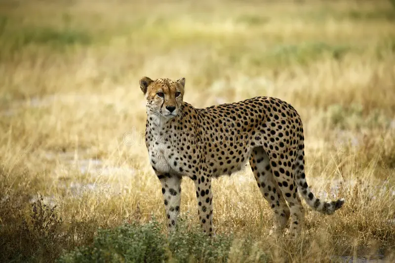

¿Qué es el guepardo real?
El guepardo real es una variación poco común del guepardo africano. Se distingue por su patrón de manchas fusionadas que forman rayas, lo que le da un aspecto único.

El guepardo real es una variación poco común del guepardo africano. Se distingue por su patrón de manchas fusionadas que forman rayas, lo que le da un aspecto único.
Se encuentra principalmente en algunas regiones del sur de África, aunque es extremadamente raro en estado salvaje.